3 Hydrological Analysis
3.1 DEM Pre-processing and Correction
This group of algorithms is designed to transform a raw Digital Elevation Model (DEM) into a hydrologically correct surface where water can flow uninterrupted to the watershed outlet. It addresses common DEM errors like pits (depressions), flat areas, and misalignments with known river networks. The output is a “pitless” and “conditioned” DEM that is essential for accurate flow direction, watershed delineation, and subsequent hydrological analysis.
3.1.1 simplepits
simplepits is an initial, targeted step for removing hydrological depressions (pits) from a Digital Elevation Model (DEM) while keeping changes to the terrain as small as possible. In pit removal there are three general strategies—fill, carve/breach, or hybrid. Filling is the simplest, but applying it indiscriminately can trigger a cascade: fixing one pit creates new pits in neighboring cells, which leads to further fills and can produce artificial flat areas that were not present in the original DEM. To avoid this, simplepits focuses only on simple pits — those that can be eliminated by a single, localized elevation increase without causing any neighboring cell to become a new pit. The algorithm proceeds with a controlled trial-and-error step: it tentatively raises the pit cell by a small amount, checks the surrounding cells, and accepts the change only if no new pits appear. If any adjacent cell becomes a pit, the change is reverted and that cell is labeled a complex pit to be handled later. Operationally, it runs in linear time with respect to the number of pit cells and is intended as a conservative first pass before more comprehensive conditioning.
In TerraHidro there are two functionalities for pit removal: simplepits and pfs. The simplepits functionality modifies only the pit cell. A new elevation is assigned to that cell based on the lowest neighboring elevation plus a predefined increment (in practice, 1e-3). After this increment is applied, all neighboring cells** of the pit must be checked to ensure that no new pits were created. If none of the neighbors becomes a pit, the original pit is considered resolved by a simple, local operation and is classified as a simple pit. If any neighbor becomes a pit, the modification is undone and that pit cell is deferred to pfs, which handles complex pits.
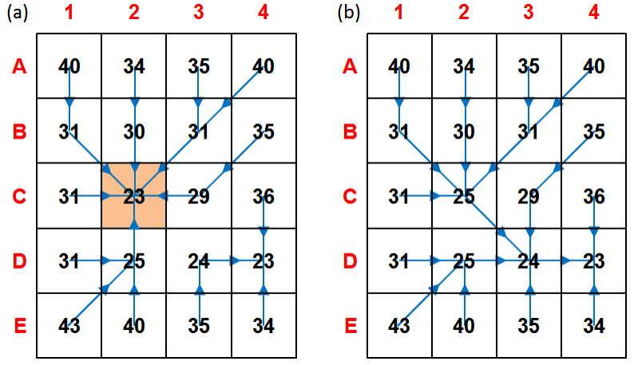 Figure - Simple pit resolution (a–b). (a) Initial DEM with pit cell C2 (orange) and D8 flow directions (blue). (b) C2 is raised to the lowest neighboring cell (D3) by a small increment, eliminating the pit without creating adjacent pits; the edit is accepted as a simple-pit case. Source: Jardim (2017).
| Flag | Description |
|---|---|
dem |
Input raster DEM file (e.g.,inputDEM.tif) |
output |
Output raster file (e.g., outputDEM.tif) |
The following example demonstrates how to use simplepits tool from the command line:
Reference:
Jardim, A. C. (2017). Direções de fluxo em modelos digitais de elevação: um método com foco na qualidade da estimativa e processamento de grande volume de dados [Doctoral dissertation, Instituto Nacional de Pesquisas Espaciais (INPE)]. https://sid.inpe.br/mtc-m21b/2017/05.17.13.26
See also: pfs, removepits.
3.1.2 agreedem
agreedem modifies a Digital Elevation Model (DEM) in and around a known drainage network to improve the agreement between automatically derived flow directions and observed/reference channels. When the drainage extracted from a raw DEM does not align with mapped streams, agreedem “guides” flow by sharpening (trenching/burning) the elevations along the reference network and optionally smoothing the surrounding cells within a distance buffer. This targeted editing is especially effective over low-relief and flat areas, where automatic drainage extraction is most ambiguous and computationally costly (see Clarke & Burnett, 2003).
agreedem is not a complete pit/flat conditioning method on its own. It only edits elevations on the reference lines and nearby cells; therefore, a hydrologically conditioned DEM (HC-DEM) still requires flat-area handling** and pit removal (e.g., simplepits then pfs) so that D8 flow directions are defined everywhere. In practice, drainage data are supplied as vector lines and first converted to a raster grid; each stream cell receives an assigned “burn” value (stream burning; Wang et al., 2011), producing a gridded drainage mask that agreedem uses together with the original DEM.
The reconditioning occurs in two coupled steps:
- Sharpening (trenching/burning): a fixed decrement is subtracted from the elevation of every drainage cell to carve a narrow channel along the reference lines. This intentionally introduces artificial micro-valleys that act as flow guides for automatic extraction.
- Smoothing (buffered taper): within a user-defined buffer radius (in cells) around the drainage, additional decrements are applied that decrease with distance from the line (distance-weighted). This creates a small stepped cross-section that transitions the trench back to the surrounding terrain, reducing artifacts and improving convergence of flow to the channel.
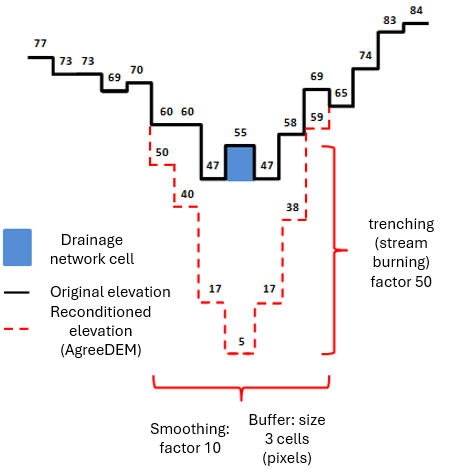
Figure 3.1. Reconditioning (AgreeDEM). Cross-section example showing a 3×3 buffer where the nearest ring to the channel receives the largest decrement, the next ring a smaller decrement, and so on; the drainage cells themselves receive a larger burn depth. (Illustrative values follow the narrative.)
Workflow note. After running
agreedem, proceed with flat-area and pit resolution (e.g.,flatareas→simplepits→pfs) to obtain a final HC-DEM suitable for D8 flow direction, contributing area, and watershed delineation.
Parameters
| Flag | Description |
|---|---|
dem |
Input DEM raster file (GeoTIFF) (e.g., inputDEM.tif). |
drainage |
Input drainage network (vector .shp or raster grid). Vector lines are rasterized internally/externally to a grid for stream burning (e.g., inputDrainage.shp). |
burn |
Trench depth applied to drainage cells (fixed decrement), e.g., 50. |
buffer |
Buffer radius in cells around drainage for smoothing (distance-weighted taper), e.g., 3. |
smooth |
Smoothing factor that scales decrements within the buffer (larger values yield stronger taper near the channel), e.g., 10. |
burn-only |
Optional switch to disable smoothing and apply trenching only on drainage cells. |
-output |
Output reconditioned DEM (GeoTIFF) (e.g., outputDEM.tif). |
The following example demonstrates how to use agreedem tool from the command line:
Example (illustrative):
Reference:
Clarke, S., & Burnett, K. (2003). Comparison of digital elevation models for aquatic data development. Photogrammetric Engineering & Remote Sensing, 69(12), 1367-1375. https://doi.org/10.14358/PERS.69.12.1367
Wang, J., Li, L., Hao, Z., & Gourley, J. J. (2011). Stream guiding algorithm for deriving flow direction from DEM and location of main streams. IAHS-AISH Publication, 346, 198-205.
See also: pfsd.
3.1.3 flatareas
flatareas identifies contiguous regions of uniform elevation within a Digital Elevation Model (DEM). The tool scans the input raster for adjacent cells possessing identical elevation values. It then groups these cells into distinct flat features.
The algorithm requires a user-defined minimum area threshold, specified as a number of cells. This parameter excludes smaller, potentially insignificant flat zones from the output. The result is a raster layer where each flat area is classified, providing a basis for subsequent hydrological conditioning procedures.
flatareas identifies flat areas—contiguous clusters of cells with the same elevation—and outputs a raster mask to be used in the next step (carving) so that flow lines can pass through the center of wide rivers and large flats. Flat areas are common in DEMs such as SRTM, AW3D30, and Copernicus DEM where river widths exceed grid resolution; they often appear as a “staircase” along the longitudinal profile, and every cell within a flat behaves like a pit, increasing the cost of hydrologic conditioning. By first mapping these flats, subsequent processing can dig a V-shaped channel from the edges toward the center, reducing the number of pits and guiding drainage.
The original detection approach uses a simple image filter rather than an expensive region-growing segmentation. The filter has two parts: an inner 3×3 square (central test) and an outer cross (expansion). The kernel is swept from the upper-left to the lower-right of the DEM. At each position, if all cells in the inner square share the central cell’s elevation, then any cells in the outer cross that also match are marked as flat. Cells with invalid/NoData elevation (e.g., ocean mask values such as -32768) are ignored. This produces large connected flat patches efficiently. In Figure below (Identifying flat areas), intermediate steps (e.g., 26a and 26b) show the inner test and subsequent marking; by the final pass (step 112) most flat cells are identified. A few unmarked cells may remain, but they do not affect the next stage, which carves these flats.
An enhanced variant uses a breadth-first flood fill (8-connected: orthogonal and diagonal neighbors), starting from each valid cell, to visit all equal-elevation neighbors exactly once. This ensures complete detection with \(O(n)\) complexity (each DEM cell is processed once) and naturally selects diagonal borders as well as orthogonal ones. After each component is discovered, it is retained as a flat area only if it meets the minimum size (cell count) specified by the user.
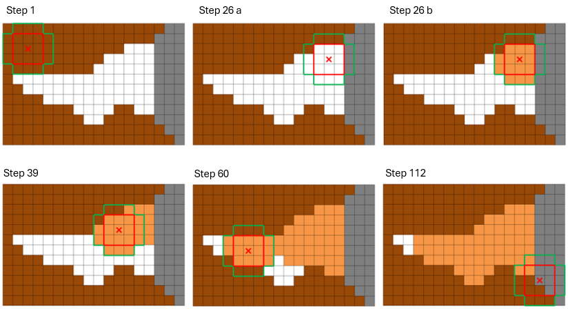 Figure 3.2. Identifying flat areas. DEM cells with distinct elevations (brown) surround a flat river reach (white); gray cells are invalid/NoData (e.g., ocean/border). The 3×3 inner square (red) and outer cross (green) filter identify and mark the flat region (orange). By step 112, nearly all flat cells are tagged; any remaining unmarked cells are corrected during the subsequent carving stage. Source: Jardim (2017).
Parameters
| Flag | Description |
|---|---|
dem |
Input DEM raster (GeoTIFF), e.g., inputDEM.tif. |
min-cells |
Positive integer for the minimum contiguous cell count required to classify a region as a flat area. |
output |
Output flat-areas mask (GeoTIFF), e.g., outputFlatAreas.tif (e.g., 1 = flat, 0 = non-flat). |
The following example demonstrates how to use flatareas tool from the command line:
Example:
Reference:
Jardim, A. C. (2017). Direções de fluxo em modelos digitais de elevação: um método com foco na qualidade da estimativa e processamento de grande volume de dados [Doctoral dissertation, Instituto Nacional de Pesquisas Espaciais (INPE)]. https://sid.inpe.br/mtc-m21b/2017/05.17.13.26
3.1.4 carvev
carvev detects flat areas in a DEM and carves them from the borders toward the center to form a V-shaped cross-section, guiding drainage through the midline of wide rivers and extensive flats. Unlike workflows that first require an explicit flat-area mask, carvev identifies flats internally and then performs the carving step; you do not need to run flatareas beforehand.
The algorithm first locates the orthogonal border of each flat (only horizontal/vertical adjacencies are considered borders; neighbors marked as invalid/NoData—e.g., ocean or DEM edges—are not treated as borders). It then decrements the elevation of all border cells by a small initial step and removes those cells from the flat set. The process repeats in rounds, each time re-identifying the new orthogonal border and applying decrements, progressively moving inward until no flat cells remain. This produces a stepped V profile: higher steps at the outer edges, lower steps toward the center, so that subsequent flow-direction and contributing-area calculations follow the centerline of the river/plain rather than hugging one bank. Special handling avoids carving from ocean/border toward the interior, preventing unrealistic flow from sea to land.
This pre-processing drastically reduces the number of pits in flats and accelerates downstream conditioning: after carvev, only a smaller set of residual depressions typically remains for simplepits and pfs, improving both robustness and performance.
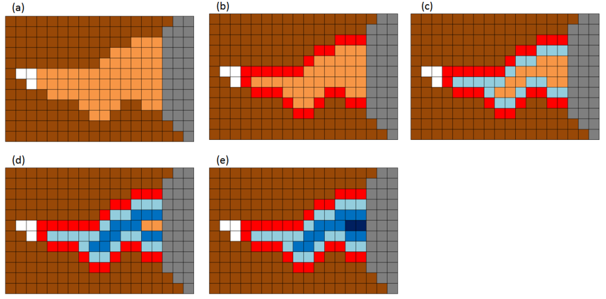 Figure - Demonstration of V-shaped carving of flat areas. (a) Identify flats and their orthogonal borders; (b–e) iteratively decrement border elevations and move inward, forming a stepped V profile centered on the flat’s midline.
Parameters
| Flag | Description |
|---|---|
dem |
Input DEM raster (GeoTIFF), e.g., (e.g.,inputDEM.tif). |
output |
Output DEM (GeoTIFF) with flat areas carved in V-shape (e.g., outputDEM.tif). |
The following example demonstrates how to use carvev tool from the command line:
Reference:
Jardim, A. C. (2017). Direções de fluxo em modelos digitais de elevação: um método com foco na qualidade da estimativa e processamento de grande volume de dados [Doctoral dissertation, Instituto Nacional de Pesquisas Espaciais (INPE)]. https://sid.inpe.br/mtc-m21b/2017/05.17.13.26
3.1.5 carve
carve removes flat areas from a DEM by carving a gentle slope inside the flat mask produced by flatareas, optionally guided by a reference drainage network (vector or raster). In contrast to carvev (which converges toward the geometric center of the flat), carve can force the lowest elevations to align with mapped channels, producing flow paths that better match observed hydrography.
Workflow requirement. Run
flatareasfirst to generate the flat-area raster; pass this raster tocarvetogether with the original DEM and the reference drainage network (if used).
How it works (summary).
1) From the input flat-area mask, carve selects the border cells of each flat region according to a user-chosen neighborhood (orthogonal, diagonal, or all directions).
2) If a reference drainage is enabled, cells on the drainage within the flat are treated as the lowest targets, so the carving preferentially guides slopes toward the mapped channel.
3) The algorithm iteratively decrements border elevations and re-identifies new borders, moving inward like a stepped V-profile until the flat is removed. If drainage is not used, the carving converges toward the center (behavior similar to carvev).
4) Any remaining uncarved flat cells at the end are adjusted with the last decrement step; if drainage is active, stream cells receive the smallest (lowest) elevation to ensure convergence to the channel.
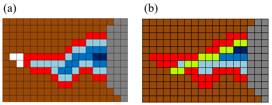
Figure - Comparison of the final stage between carvev and carve. (a) original V-shaped notch (carvev, centered), (b) improved notch (carve, aligned with the reference drainage), the green pixels correspond to a reference drainage.
Parameters
| Flag | Description |
|---|---|
dem |
Input DEM (GeoTIFF) (e.g., inputDEM.tif). |
drainage |
Input reference drainage (vector .shp or raster). When enabled (DRNON), carving aligns the lowest elevations with the drainage inside each flat. If disabled (DRNOFF), carving converges toward the center (like carvev). |
--flat |
Input flat-areas raster (GeoTIFF) produced by flatareas (e.g., inputFlatAreas.tif). Required. |
DRNON | DRNOFF |
Use drainage? DRNON = use drainage to guide carving; DRNOFF = do not use drainage (center-focused carving). |
CROSS | DIAG | ALL |
Border-definition rule for each iteration: CROSS = orthogonal neighbors; DIAG = diagonal neighbors; ALL = eight-direction neighbors. |
-o, --output |
Output DEM (GeoTIFF) with flat areas carved (e.g., outputDEM.tif). |
The following example demonstrates how to use carve tool from the command line:
th carve inputDEM.tif inputDrainage.shp inputFlatAreas.tif DRNON|DRNOFF CROSS|DIAG|ALL outputDEM.tifExample (illustrative):
Author: Dr. Henrique Rennó de Azeredo Freitas
3.1.6 fill
fill repairs missing-data holes (voids/NoData) in a DEM by fusing it with a reference DEM that provides elevation inside the voids. The tool uses a separate, often coarser-resolution, reference DEM to supply elevation values for these regions. This is not the same as the “fill sinks” hydrologic operation found in SAGA GIS, GRASS, etc.
- This tool: fills voids where the DEM has no data (e.g., SRTM gaps).
- Fill sinks (other software): alters elevations to remove hydrologic depressions in valid data.
Use fill early in the workflow to produce a complete, gap-free DEM before hydrologic conditioning (agreedem, flatareas/carve or carvev, simplepits, pfs, etc.).
How it works (summary).
fill implements a modified Delta Surface Fill (Grohman et al., 2006): it derives a smooth difference (“delta”) between overlapping, valid portions of the input DEM and the reference DEM, then uses that delta to blend elevations seamlessly inside voids so that transitions at void boundaries are undetectable.
Best practices. Make sure the input and reference DEMs are in the same projection.
Parameters
| Flag | Description |
|---|---|
dem |
Input DEM (GeoTIFF) with voids (e.g., inputDEM.tif). |
reference |
Reference DEM (GeoTIFF) that supplies elevations inside voids (e.g., referenceDEM.tif). |
output |
Output void-filled DEM (GeoTIFF) (e.g., outputDEM.tif). |
The following example demonstrates how to use fill tool from the command line:
Reference:
Grohman, G., Kroenung, G. and Strebeck, J., 2006. Filling SRTM voids: The delta surface fill method. Photogrammetric Engineering and Remote Sensing, 72(3), pp.213-216.
See also: simplepits, removepits.
3.1.7 pfs
pfs removes depressions from a Digital Elevation Model (DEM) using a priority-first search algorithm. The tool initiates a grid search from each pit cell to locate the nearest spill point with a lower elevation. It employs a priority queue to evaluate potential paths, constructing a descending elevation trajectory to the outlet.
This process modifies cell values along the selected path to create a hydrologically continuous surface. The algorithm ensures all depressions are resolved, producing a pit-free DEM suitable for subsequent flow-direction analysis.
pfs removes all remaining depressions from a DEM by carving a path from each pit cell to an outlet cell using a Priority-First Search (PFS). Unlike simplepits, which changes only the pit cell, pfs modifies the elevations of multiple cells along a selected path so that flow can proceed continuously from the original pit to a lower cell. To minimize DEM alteration, the path is chosen to be as short as possible toward the lowest reachable elevation; if no valid interior cell is found first, the path may end at an invalid cell or at the DEM border.
The DEM is treated as a graph in which each grid cell is a node and neighborhood relations (typically 8-connected) are edges. Starting at the pit (initial node), PFS explores neighboring cells using a priority queue ordered by desirability—first by lower elevation, and, in case of ties, by shorter path length from the pit. As cells are visited, the algorithm maintains a tree of paths (parent–child relations) that encodes all partial routes under consideration. When PFS reaches a final cell that satisfies the stop criteria (lower elevation and shortest distance), it commits the path from the pit to that outlet and proceeds to modify the DEM along that path.
 Figure - PFS search to remove a pit. The priority queue tracks, for each visited cell, its elevation, the number of steps from the pit (path length), and its parent. The final path (e.g., B2–C2–D3–D4) is committed and marked in the path tree (Jardim, 2017).
Figure - PFS search to remove a pit. The priority queue tracks, for each visited cell, its elevation, the number of steps from the pit (path length), and its parent. The final path (e.g., B2–C2–D3–D4) is committed and marked in the path tree (Jardim, 2017).
Elevation modification is applied by creating a linear downslope along the chosen path: moving outward from the pit, each intermediate cell along the route receives an elevation slightly lower than its predecessor, using a small decrement step (in practice, 1e-3) applied cell by cell; the first (pit) and last (outlet) cells are not adjusted. This yields a gentle carved profile that preserves local relief while ensuring drainage continuity. To prevent creating a new pit near the outlet, PFS includes a stop condition that guarantees the computed elevation at the cell before the outlet will still be higher than the outlet’s elevation given the cumulative decrements; otherwise, the route is rejected and search continues. Border or invalid cells may also serve as terminating outlets under the stop criteria.
 Figure - DEM modification by a linear slope . Example before (a) and after (b) applying a constant decrement along the committed path (illustrated here with a larger step of
Figure - DEM modification by a linear slope . Example before (a) and after (b) applying a constant decrement along the committed path (illustrated here with a larger step of 1e-1 for clarity), leaving the pit and outlet cells unaltered (Jardim, 2017).
In practice, pfs complements simplepits: simple depressions are removed first with single-cell fills; complex ones are then resolved by PFS carving. The result is a pitless DEM suitable for reliable flow-direction, contributing-area, and drainage-network derivations, with minimal distortion relative to the original topography.
| Flag | Description |
|---|---|
dem |
Input raster DEM file (e.g.,inputDEM.tif) |
output |
Output raster file (e.g., outputDEM.tif) |
The following example demonstrates how to use simplepits tool from the command line:
Reference:
Jones, R. (2002). Algorithms for using a DEM for mapping catchment areas of stream sediment samples. Computers & geosciences, v. 28, n. 9, p. 1051–1060. https://doi.org/10.1016/S0098-3004(02)00022-5
Jardim, A. C. (2017). Direções de fluxo em modelos digitais de elevação: um método com foco na qualidade da estimativa e processamento de grande volume de dados [Doctoral dissertation, Instituto Nacional de Pesquisas Espaciais (INPE)]. https://sid.inpe.br/mtc-m21b/2017/05.17.13.26
See also: simplepits, removepits.
3.1.8 pfsd
pfsd removes all remaining pits by carving paths to outlet cells using the same Priority-First Search (PFS) algorithm implemented in pfs, with one key enhancement: processing is seeded from the reference drainage network and proceeds upstream into adjacent depressions. By anchoring the search to mapped channels, pfsd accelerates convergence, improves path selection near wide flats, and yields a pitless DEM whose drainage is consistent with observed hydrography.
How it works (summary).
- Treat the DEM as a graph (cells = nodes; 8-connected neighbors = edges).
- Initialize the PFS frontier on drainage cells (vector lines rasterized internally if needed).
- For each encountered pit, build a candidate tree of paths ordered by lower elevation and, on ties, shorter distance to the channel; commit the first path that satisfies the outlet criteria.
- Carve a gentle linear downslope along the committed path (small per-cell decrements), ensuring continuous flow from the pit to the outlet without over-smoothing.
- Iterate upstream until no depressions remain.
When to use. Choose pfsd when a reference drainage is available and you want pit removal to follow mapped channels. For projects without a drainage reference, use pfs.
Workflow note. A common conditioning chain is:
agreedem (optional) → flatareas + carve (or carvev) → simplepits → pfsd.
Using pfsd at the end aligns remaining pit removal with the reference drainage, improving hydrologic realism and efficiency.
Parameters
| Flag | Description |
|---|---|
-dem |
Input DEM (GeoTIFF) (e.g., inputDEM.tif). |
drainage |
Reference drainage network (vector .shp or raster). Used to seed PFS from channels upstream. |
-output |
Output pitless DEM (GeoTIFF) after PFS carving (e.g., outputDEM.tif). |
The following example demonstrates how to use pfsd tool from the command line:
Reference:
Jones, R. (2002). Algorithms for using a DEM for mapping catchment areas of stream sediment samples. Computers & geosciences, v. 28, n. 9, p. 1051–1060. https://doi.org/10.1016/S0098-3004(02)00022-5
Author: Dr. Henrique Rennó de Azeredo Freitas
See also: pfs, removepits.
3.1.9 removepits
removepits performs a full hydrologic correction of a DEM using a hybrid approach that both fills and carves where appropriate, minimizing unnecessary elevation changes while ensuring continuous drainage. It is the preferred one-pass procedure when you want a pitless DEM without supplying a reference drainage network.
What it does (three phases).
removepits internally executes, in sequence:
carvev— identifies flat areas and carves them V-shaped from the borders toward the center, guiding flow through the flat midline and drastically reducing the number of depressions in these regions;
simplepits— applies selective single-cell filling to remove only those depressions that can be fixed by a minimal local raise without creating new pits;
pfs— uses Priority-First Search to carve a gentle downslope path from any remaining (complex) pits to an outlet cell, completing the elimination of depressions.
By combining targeted fill sinks (phase 2) with controlled carving (phases 1 and 3), removepits is a hybrid method designed to preserve local relief while producing reliable D8 flow directions across the entire grid.
Parameters
| Flag | Description |
|---|---|
dem |
Input DEM (GeoTIFF) (e.g., inputDEM.tif). |
output |
Output pitless DEM (GeoTIFF) with flats carved and simple/complex pits removed (e.g., outputDEM.tif). |
The following example demonstrates how to use removepits tool from the command line:
Reference:
Jardim, A. C. (2017). Direções de fluxo em modelos digitais de elevação: um método com foco na qualidade da estimativa e processamento de grande volume de dados [Doctoral dissertation, Instituto Nacional de Pesquisas Espaciais (INPE)]. https://sid.inpe.br/mtc-m21b/2017/05.17.13.26
See also: carvev, simplepits, pfs.
3.2 Flow Analysis, Drainage Network Extraction and Characterization
- d8
- d8ca
- d8drainage
- d8drainagev
- flowpath
- segments
- outletbasin
- mainriver
- shreve
- strahler
- ottorivers
- mouths
- orderedmouths
- ottorivers
3.2.1 d8
d8 computes the local drainage direction (flow direction) for each DEM cell using the classic D8 method (O’Callaghan & Mark, 1984). For every valid cell, the algorithm compares the eight neighbors and assigns the direction of steepest descent. Cells with no downslope neighbor (e.g., flats/pits not yet conditioned, borders, or NoData) receive 0.
Prerequisite. Use a hydrologically conditioned DEM (pitless and flat areas treated), typically produced with
removepits(or the equivalent sequencecarvev→simplepits→pfs, orpfsdwhen a reference drainage is used).
Direction codes (powers of two).
The output raster stores a power-of-two code indicating the outflow neighbor:
| Code | Direction | Offset (row, col) |
|---|---|---|
| 1 | E | (0, +1) |
| 2 | SE | (+1, +1) |
| 4 | S | (+1, 0) |
| 8 | SW | (+1, −1) |
| 16 | W | (0, −1) |
| 32 | NW | (−1, −1) |
| 64 | N | (−1, 0) |
| 128 | NE | (−1, +1) |
| 0 | Invalid / No downslope / NoData |
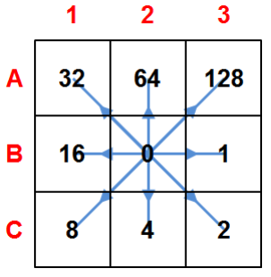
Figure - Codes and corresponding flow directions (compass layout).
Notes.
• Ties are uncommon after proper conditioning; if present, the tool resolves to one neighbor or yields 0 when no descent exists.
• Cells touching NoData or the DEM boundary may legitimately output 0.
• The D8 flow direction is the basis for contributing area, stream extraction, stream ordering, and watershed delineation.
Parameters
| Flag | Description |
|---|---|
dem |
Input hydrologically conditioned DEM (GeoTIFF) (e.g., inputDEM.tif). |
output |
Output D8 flow direction raster (GeoTIFF) (e.g., flowdir.tif). |
The following example demonstrates how to use d8 tool from the command line:
Reference:
O’Callaghan, J. F., & Mark, D. M. (1984). The extraction of drainage networks from digital elevation data. Computer vision, graphics, and image processing, 28(3), 323-344.https://doi.org/10.1016/S0734-189X(84)80011-0
See also: d8ca.
3.2.2 d8toupstream
d8toupstream derives an upstream-flow raster from a D8 flow-direction grid. While d8 stores each cell’s outflow (steepest descent), d8toupstream encodes which neighbors flow into each cell. The encoding uses the D8 power-of-two scheme and writes, for every cell, the sum of the codes of downstream directions of its neighbors that point to it Cells with no inflow receive 0.
Why it matters. The D8 upstream flow directions grid is a key input for higher-level tools that trace channels or hierarchies upstream, such as:
rivers,ottorivers,ottobasins,mainriver,watercourses, anddambreak.
Behavior (summary).
For each cell, inspect its eight neighbors. If a neighbor’s D8 flow-direction points to the current cell, add that neighbor’s direction code to the current cell’s value. The result compactly represents all inflowing directions (e.g., a confluence might store 2 + 64 = 66 for SE and N inflows).
Prerequisite. Use a hydrologically conditioned DEM to compute
d8first (e.g.,removepits). Ensure all rasters share the same extent, resolution, and alignment.
Parameters
| Flag | Description |
|---|---|
d8 |
Input D8 flow-direction raster (GeoTIFF) (e.g., inputD8.tif). |
output |
Output upstream-pointer raster (GeoTIFF) (e.g., outputUpstream.tif (sum of D8 codes of inflow cells)). |
The following example demonstrates how to use d8toupstream tool from the command line:
See also: d8.
3.2.3 d8ca
d8ca computes the contributing area (a.k.a. flow accumulation) by following a D8 flow-direction grid and counting how many cells drain to each location, including the cell itself (single-flow-direction; no divergence). This produces a raster in which hillslopes have small values and channels concentrate large values.
Prerequisite. Use a D8 flow-direction raster produced by
d8from a hydrologically conditioned (pitless) DEM.
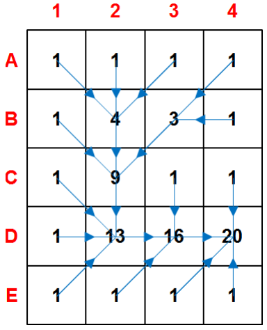
Figure - Contributing area derived from a D8 grid.
Behavior & output
- Method: Single-flow-direction (SFD): each cell routes its discharge to one downslope neighbor (O’Callaghan & Mark, 1984).
- Default units: cell counts (number of upslope cells).
- NoData handling: cells with NoData in the input D8 raster become NoData in the output.
Parameters
| Flag | Description |
|---|---|
input |
Input D8 flow-direction raster (GeoTIFF) (e.g., inputD8.tif). |
output |
Output D8 contributing area (GeoTIFF) (e.g., outputD8ContributingArea.tif). |
The following example demonstrates how to use d8ca tool from the command line:
Reference:
O’Callaghan, J. F., & Mark, D. M. (1984). The extraction of drainage networks from digital elevation data. Computer vision, graphics, and image processing, 28(3), 323-344.https://doi.org/10.1016/S0734-189X(84)80011-0
See also: d8.
3.2.4 d8drainage
d8drainage maps the drainage network by applying a threshold to a D8 contributing area raster (d8ca). Each cell is assigned 1 (stream) if its contributing area is greater than or equal to the specified threshold, and 0 otherwise. The result is a binary stream grid suitable for stream ordering, vectorization, and watershed delineation.
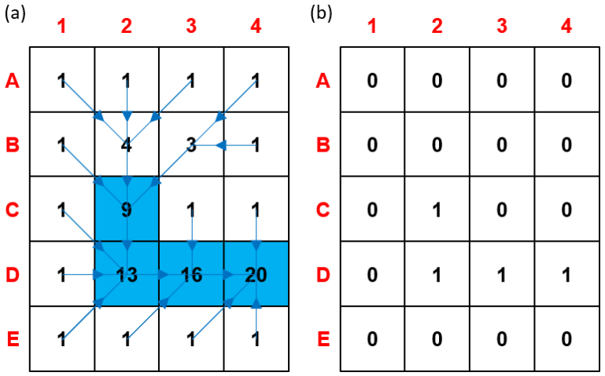
Figure - Drainage network derived from a D8 contributing-area grid using a minimum-area threshold. (a) Threshold of 9 cells to initiate a channel; (b) Resulting binary raster of the extracted channel network.
Prerequisite. Use a contributing-area raster produced by
d8cafrom a hydrologically conditioned DEM and its correspondingd8flow directions.
Choosing the threshold (guidance)
- The threshold represents the minimum upslope area needed to initiate/maintain a channel (area used as a surrogate for discharge).
- Smaller thresholds ⇒ denser networks; larger thresholds ⇒ parser networks.
- There is no universal value: it depends on terrain, climate, lithology, and grid resolution**.
- Common practice: inspect maps/imagery, test a range of values, and select the one that best matches known channels.
Behavior & data handling
- Input NoData cells remain NoData in the output (not classified as streams).
- Threshold is provided in cells (i.e., count of upslope cells).
Parameters
| Flag | Description |
|---|---|
input |
Input D8 contributing area raster (GeoTIFF), (e.g. inputContributingArea.tif). |
output |
Output binary drainage network raster (GeoTIFF) (e.g., outputDrainage.tif (1 = stream, 0 = non-stream). |
thresholdValue |
Minimum contributing area (in cells) to classify a cell as stream. |
The following example demonstrates how to use d8ca tool from the command line:
Example:
th d8drainage d8ca.tif drainage.tif 2000Tip Start with a broad sweep (e.g., 300, 500, 1000, 2000, 5000 cells), compare against known hydrography or high-resolution imagery, then refine the threshold for your study area..
3.2.5 d8drainagev
d8drainagev converts a binary drainage raster (e.g., from d8drainage) into vector polylines by following the D8 flow-direction raster. The tool traverses stream cells from sources (no inflowing neighbors) downstream along the D8 directions, assembling connected cell pairs into line features that represent stream segments.
How it works (summary).
- Reads the drainage raster (1 = stream, 0 = non-stream; NoData ignored) and the matching D8 direction raster.
- Detects headwater cells (stream cells with no upstream contributors) and traces downstream paths by following the D8 pointer of each cell.
- Builds polyline features for each connected path; branching and confluences are preserved by starting new lines as needed.
- Outputs a vector line dataset suitable for ordering, attribution, and cartographic display.
Parameters
| Flag | Description |
|---|---|
drainage |
Input drainage network raster (GeoTIFF), e.g., inputDrainage.tif (1 = stream, 0 = else). |
d8 |
Input D8 flow-direction raster (GeoTIFF), e.g., inputD8.tif. |
output |
Output vector drainage network (e.g., ESRI Shapefile), e.g., outputDrainage.shp. |
Notes • Ensure the drainage raster is topologically coherent with the D8 grid (both produced from the same DEM). • The drainage grid and D8 grid must share the same extent, pixel size, and alignment • NoData and non-stream cells are skipped; only cells marked as stream are traced. • The resulting lines can be post-processed (e.g., smoothing, ordering, attribute joins) according to project needs.
The following example demonstrates how to use d8ca tool from the command line:
See also: d8, d8ca, d8drainage.
3.2.6 flowpath
flowpath creates downstream flow paths starting from user-supplied source points and following a D8 flow-direction grid. Each path is routed cell-by-cell along the steepest-descent pointers until it reaches an outlet, a border, or NoData. The result is a raster of flow paths connecting sources to the drainage network/outlet.
Prerequisites. Use a hydrologically conditioned DEM to compute
d8first. Ensure the source points are in the same CRS as the D8 raster and snapped to the target grid (see notes).
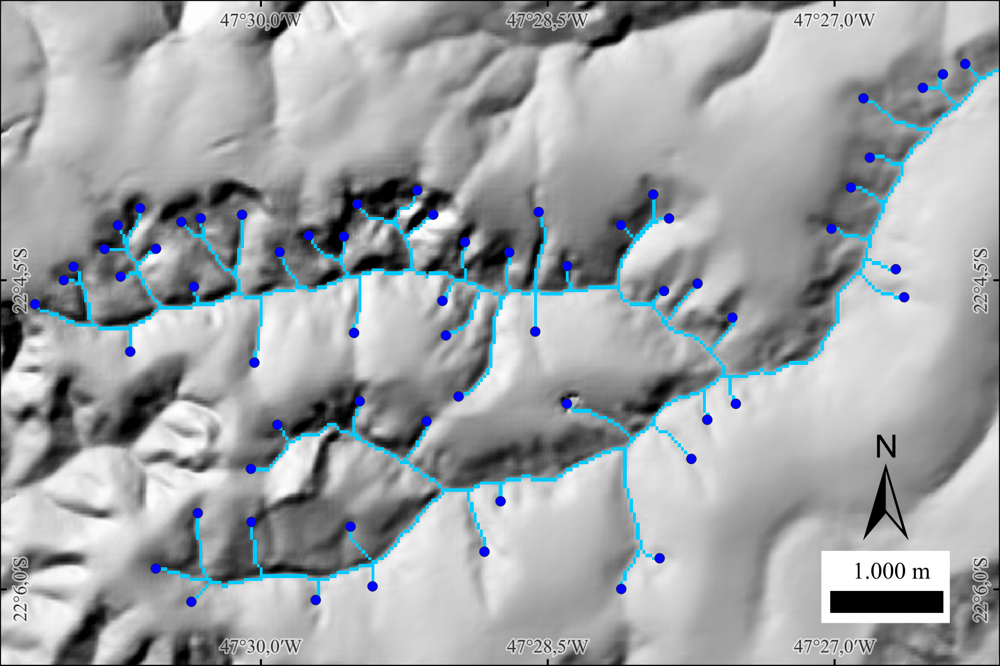 Figure. Flow paths (light blue) traced from source points (dark blue dots). Hillshade background.
Parameters
| Flag | Description |
|---|---|
d8 |
Input D8 flow-direction raster (GeoTIFF) (e.g., inputD8.tif). |
sources |
Input source points (vector) (e.g., inputSources.shp - one point per initiation site). |
output |
Output flow paths raster (GeoTIFF) (e.g., outputFlowPaths.tif - 1 = path, 0 = background). |
The following example demonstrates how to use flowpath tool from the command line:
Author: Dr. Henrique Rennó de Azeredo Freitas
See also: d8ca, d8drainage.
3.2.7 segments
segments partitions a drainage network (raster) into topologically coherent segments using the D8 flow-direction grid. Each segment receives a unique integer ID so that downstream tools can compute per-segment attributes (length, slope, mean contributing area, etc.) and perform ordering or network analytics.
A drainage segment is the maximal run of connected stream cells whose endpoints match one of the following cases:
1) Headwater (initial point) to confluence (intersection point)
2) Confluence to confluence
3) Confluence to outlet (final point)
Within a segment, there are no intermediate confluences; flow proceeds unbranched following the D8 pointers.
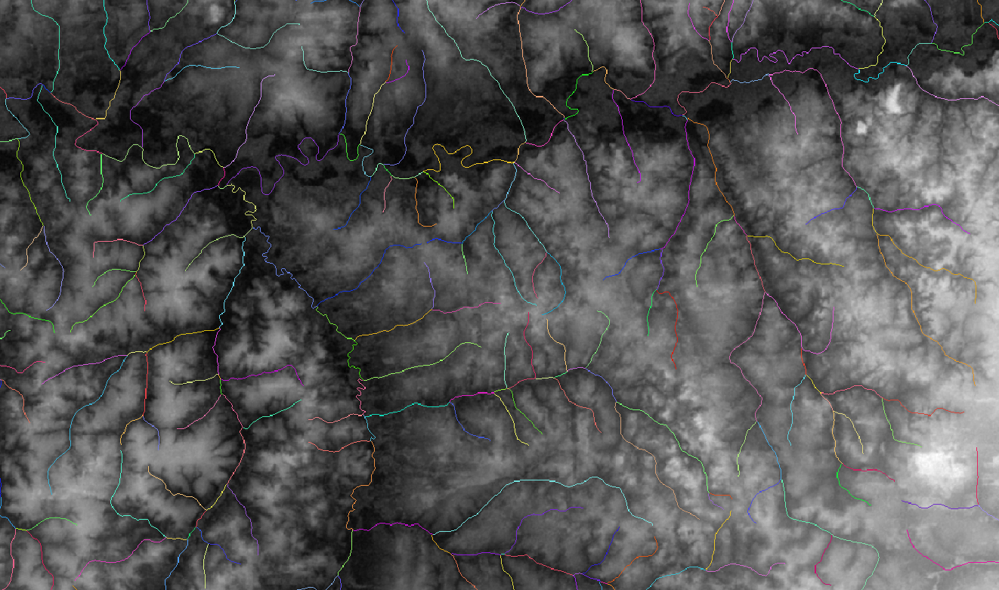 Figure - Drainage network segmented by unique IDs (colors) between sources, confluences, and outlets.
Requirements. The drainage raster (1 = stream, 0 = non-stream) and the D8 raster must share the same extent, resolution, and alignment, and both must derive from a hydrologically conditioned DEM.
Behavior & data handling
- Heads/confluences/outlets are detected from the drainage grid using D8 inflow/outflow counts.
- Each resulting segment is written to the output raster with a unique positive integer (background = 0/NoData).
- Single-cell streams are treated as valid segments (headwater directly to outlet/confluence).
- Non-stream and NoData cells are preserved as background.
Parameters
| Flag | Description |
|---|---|
d8 |
Input D8 flow-direction raster (GeoTIFF) (e.g., inputD8.tif). |
--drainage |
Input binary drainage raster (GeoTIFF) (e.g., inputDrainage.tif (1 = stream, 0 = non-stream)). |
-o, --output |
Output segment ID raster (GeoTIFF) (e.g., outputSegments.tif (unique integer per segment)). |
The following example demonstrates how to use segments tool from the command line:
See also: d8, d8ca, d8drainage, minibasins.
3.2.8 outletbasin
outletbasin delineates the contributing basin (upslope area) for a specified outlet cell by tracing cells that drain to that outlet using a D8 flow-direction grid. You provide the outlet’s row and column indices in the raster; the tool returns a binary basin mask where 1 = inside basin and 0 = outside.
How it works (summary).
Starting at the outlet cell, the algorithm follows D8 pointers in reverse (i.e., finds all cells whose flow exits to the outlet through any upstream path). The result is the complete upslope area that contributes flow to the chosen outlet.
Prerequisites. Use a hydrologically conditioned DEM to compute D8 directions (
d8), typically after pit removal (removepitsorsimplepits+pfs/pfsd).
Tip. Snap the outlet to the stream grid (e.g., fromd8drainage) to ensure the selected cell lies on-channel.
Parameters
| Flag | Description |
|---|---|
d8 |
Input D8 flow-direction raster (GeoTIFF) (e.g., inputD8.tif). |
inputOutletrow |
Row index (integer) of the outlet cell to delineate. |
inputOutletcolumn |
Column index (integer) of the outlet cell to delineate. |
output |
Output outlet basin mask (GeoTIFF; 1 = basin, 0 = non-basin) (e.g., outputOutletbasin.tif). |
The following example demonstrates how to use segments tool from the command line:
Example:
3.2.9 mainriver
mainriver extracts the main river of a drainage network by tracing upstream from a user-provided mouth (outlet) cell, following the D8 upstream raster and resolving each confluence toward the branch with the largest contributing area. The result is a binary raster where cells along the main channel are marked as river.
How it works (summary).
Starting at the mouth, the algorithm moves upstream using the d8toupstream grid (which encodes which neighbors flow into each cell). At every junction, it consults the contributing area raster (d8ca) to select the dominant branch (largest upslope area) within the drainage mask. This continues until all sources of the main river are traversed, producing a single, continuous main-stem path.
Prerequisites.
• A hydrologically conditioned DEM used to derived8→d8ca(contributing area) andd8toupstream(upstream pointers).
• A binary drainage raster (e.g., fromd8drainage) aligned with those grids.
• The mouth coordinates (row, column) in a simple text file, typically snapped to a drainage cell.
Parameters
| Flag | Description |
|---|---|
d8upstream |
Input D8 upstream-pointer raster (GeoTIFF) (e.g., inputD8upstream.tif). |
drainage |
Input binary drainage raster (GeoTIFF) (e.g., inputDrainage.tif (1 = stream, 0 = non-stream)). |
d8ca |
Input D8 contributing area raster (GeoTIFF) (e.g., inputAccumulatedArea.tif). |
mouth |
Input mouth file (text) with outlet grid coordinates (row, column). |
output |
Output main river raster (GeoTIFF) (e.g., outputRiver.tif (1 = main river, 0 = elsewhere)). |
The following example demonstrates how to use mainriver tool from the command line:
3.2.10 shreve
shreve assigns Shreve stream order (also called stream magnitude) to a drainage network using a D8 flow-direction grid, a binary drainage raster, and a text file with headwater (source) cells. In Shreve ordering, every headwater starts with 1, and at each confluence the downstream value is the sum of the upstream magnitudes; values therefore increase monotonically downstream and are proportional to the number of contributing sources.
How it works (summary).
- Initialize all source cells (from inputSources.txt) with 1.
- Traverse the drainage downstream following D8 pointers; when two or more streams merge, sum their magnitudes and write the result to the confluence cell.
- Continue to the outlet, producing an integer magnitude raster over stream cells (background = 0/NoData).
Use cases. Shreve magnitude is a convenient topologic weight for channel networks (e.g., highlighting the main stem, ranking segments, or approximating discharge potential). Unlike Strahler order, Shreve values accumulate at every confluence (no resetting), which is useful for network analytics and cartography.
Parameters
| Flag | Description |
|---|---|
d8 |
Input D8 flow-direction raster (GeoTIFF) (e.g., inputD8.tif*). | |drainage| Input binary drainage raster (GeoTIFF) (e.g., *inputDrainage.tif* (1 = stream, 0 = non-stream)). | |sources| Input text file with source (headwater) grid coordinates (row, column), one pair per line. | |output` |
The following example demonstrates how to use shreve tool from the command line:
Reference:
Shreve, R. L. (1966). Statistical law of stream numbers. The Journal of Geology, 74(1), 17-37. https://doi.org/10.1086/627137
See also: strahler, ottorivers.
3.2.11 strahler
strahler assigns Strahler stream order to a drainage network using a D8 flow-direction grid, a binary drainage raster, and a text file listing headwater (source) cells. In Strahler ordering, every headwater = 1. At a confluence:
- If the upstream orders are equal, the downstream order is one greater (e.g., 2 + 2 → 3).
- If they are different, the downstream order is the maximum of the upstream orders (e.g., 3 + 1 → 3).
This produces an integer order map that highlights network hierarchy and major tributaries.
How it works (summary).
1) Initialize source cells from inputSources.txt with order 1.
2) Traverse downstream along D8 pointers, applying the confluence rules above at each merge.
3) Write the resulting Strahler order to all stream cells (background = 0/NoData).
Strahler vs. Shreve. Strahler emphasizes hierarchical structure (orders increase only when equal orders meet). Shreve (magnitude) sums contributions and grows monotonically with the number of sources. Use Strahler for cartographic hierarchy and topology, Shreve for weighting or discharge proxies.
Parameters
| Flag | Description |
|---|---|
d8 |
Input D8 flow-direction raster (GeoTIFF) (e.g., inputD8.tif). |
drainage |
Input binary drainage raster (GeoTIFF) (e.g., inputDrainage.tif (1 = stream, 0 = non-stream)). |
sources |
Input text file with source (headwater) grid coordinates (row, column), one pair per line. |
output |
Output Strahler order raster (GeoTIFF) (e.g., outputStrahler.tif). |
The following example demonstrates how to use strahler tool from the command line:
Reference:
Strahler, A. N. (1957). Quantitative analysis of watershed geomorphology. Eos, Transactions American Geophysical Union, 38(6), 913-920. https://doi.org/10.1029/TR038i006p00913
See also: shreve, ottorivers.
3.2.12 ottorivers
ottorivers assigns hierarchical Otto codes (Pfafstetter-style) to the main river and its principal tributaries using: (i) a D8 upstream raster (d8toupstream), (ii) a binary drainage raster, (iii) a contributing-area raster (d8ca), and (iv) a text file with mouth coordinates. Starting from each mouth, the tool traces the main stem upstream, resolves junctions toward the branch with largest contributing area, and partitions the main stem into a small set of ordered segments while identifying the four major tributaries at that level. The output raster encodes these segments with Otto labels, and a companion text file provides new mouth/source seeds to recurse at the next hierarchical level.
Concept & workflow (summary).
1) For each mouth, follow upstream pointers within the drainage mask; at confluences, select the branch with greater contributing area to continue the main stem.
2) Split the traced main river into five sequential segments (level-k main-stem units) and identify up to four level-k major tributaries entering those segments.
3) Encode main-stem segments and tributaries with Otto codes for level-k, write the otto-coded raster, and export a list of mouths/sources for all coded units to serve as inputs for level-(k+1).
Notes. The procedure yields a nested, multi-level river hierarchy consistent with Pfafstetter-type schemes, enabling progressive refinement of the network and seamless linkage with basin Otto coding (
ottobasins). Use rasters derived from a hydrologically conditioned DEM.
Parameters
| Flag | Description |
|---|---|
d8upstream |
Input D8 upstream raster (GeoTIFF) (e.g., inputD8upstream.tif). |
drainage |
Input binary drainage raster (GeoTIFF) (e.g., inputDrainage.tif (1 = stream, 0 = non-stream)). |
d8ca |
Input D8 contributing area raster (GeoTIFF) (e.g., inputAccumulatedArea.tif). |
mouths |
Input mouths file (text) with outlet grid coordinates (row, column), one pair per line. |
output |
Output Otto-coded rivers raster (GeoTIFF) (e.g., outputOttoRivers.tif). |
--next-level-mouths |
Output text file with mouths/sources (grid coordinates) for all coded units at this level (e.g., outputNewLevelMouths.txt). |
The following example demonstrates how to use ottorivers tool from the command line:
th ottorivers inputD8upstream.tif inputDrainage.tif inputAccumulatedArea.tif \
inputMouths.txt outputOttoRivers.tif outputNewLevelMouths.txtReference:
Pfafstetter, O. (2014). Classificação de bacias hidrográficas: metodologia de codificação. In Agência Nacional de Águas (Brasil), Codificação de bacias hidrográficas pelo método de Otto Pfafstetter: aplicação na ANA (pp. 25–41). Brasília, DF: Autor. Manuscrito, Anexo I. Available at: https://capacitacao.ana.gov.br/conhecerh/bitstream/ana/104/1/apostila.pdf
See also: ottobasins, strahler, shreve.
3.4 Geomorphometric analysis
3.4.1 tpi
tpi computes the Topographic Position Index (TPI)—the difference between the elevation of a focal cell and the mean elevation of its surrounding neighborhood (excluding the focal cell). Positive TPI values indicate local highs (ridges/crests), negative values indicate local lows (valleys/concavities), and values near zero indicate flats or uniform slopes. TPI is scale-dependent: the neighborhood size (window) controls which landforms are emphasized (Weiss, 2001; Jenness, 2006).
Method (moving window).
For each cell, compute the local mean of neighbors within a user-defined SQUARE or CIRCLE window of given size (in cells), then subtract that mean from the focal elevation. Larger windows capture broader landforms; smaller windows highlight fine-scale features (Weiss, 2001; Jenness, 2006).
Interpretation.
• TPI » 0 → ridges/peaks/crests
• TPI « 0 → valleys/channels/depressions
• TPI ≈ 0 → planar or uniformly inclined surfaces
Notes • Choose the window size to match the target landform scale; multi-scale analyses often compute TPI at several sizes (Weiss, 2001). • The approach popularized by Jenness (2006) operationalized TPI for GIS users and helped standardize classification combining TPI with slope and thresholds (SD-based). • TPI is dimensionally consistent with the DEM: results are in the same units (e.g., meters). • The dominance formulation in Muñoz & Valeriano (2014) describes the same concept as the vertical difference to a local average surface. —
Parameters
| Flag | Description |
|---|---|
dem |
Input DEM (GeoTIFF) (e.g., inputDEM.tif). |
inputWindowSize |
Neighborhood window size (in cells) used to compute the local mean (scale of analysis). |
SQUARE|CIRCLE |
Neighborhood shape: SQUARE (square kernel) or CIRCLE (circular kernel). |
output |
Output TPI raster (same elevation units as the DEM) (e.g., outputTPI.tif). |
The following example demonstrates how to use tpi tool from the command line:
References:
Jenness, J. (2006). Topographic Position Index (tpi_jen.avx) extension for ArcView 3.x (Version 1.2). Jenness Enterprises. http://www.jennessent.com/arcview/tpi.htm
Muñoz, V. A., & de Valeriano, M. M. (2014). Mapping of flood-plain by processing of elevation data from remote sensing. In E. Pardo-Igúzquiza, C. Guardiola-Albert, J. Heredia, L. Moreno-Merino, J. Durán, & J. Vargas-Guzmán (Eds.), Mathematics of Planet Earth (Lecture Notes in Earth System Sciences, pp. 543–546). Springer. https://doi.org/10.1007/978-3-642-32408-6_106
Weiss, A. D. (2001, July). Topographic position and landforms analysis (Poster). ESRI International User Conference, San Diego, CA.
See also: hand.
3.4.2 hand
hand computes the Height Above the Nearest Drainage (HAND) (Rennó et al., 2008) for each DEM cell, a terrain descriptor that measures the vertical distance from a cell to its nearest drainage cell along the D8 flow path. By normalizing elevations to the drainage network, HAND highlights local hydrologic gradients (draining potential) and is widely used to delineate valley bottoms, riparian zones, and flood-susceptible areas.
Concept (summary).
Given a hydrologically conditioned DEM, a D8 flow grid, and a drainage mask, each cell is linked to its downstream drainage cell via the D8 path. The HAND value is the DEM elevation difference between the cell and that drainage cell. Drainage cells have HAND = 0 by definition; upland cells have positive values that reflect their relative height above channels. This relative (network-referenced) height often correlates with soil moisture regime and water-table depth in low-relief landscapes.
Prerequisites. Use a pitless DEM (e.g.,
removepits), its D8 directions (d8), and a drainage grid (d8drainage). Ensure rasters share the same extent, resolution, and alignment.
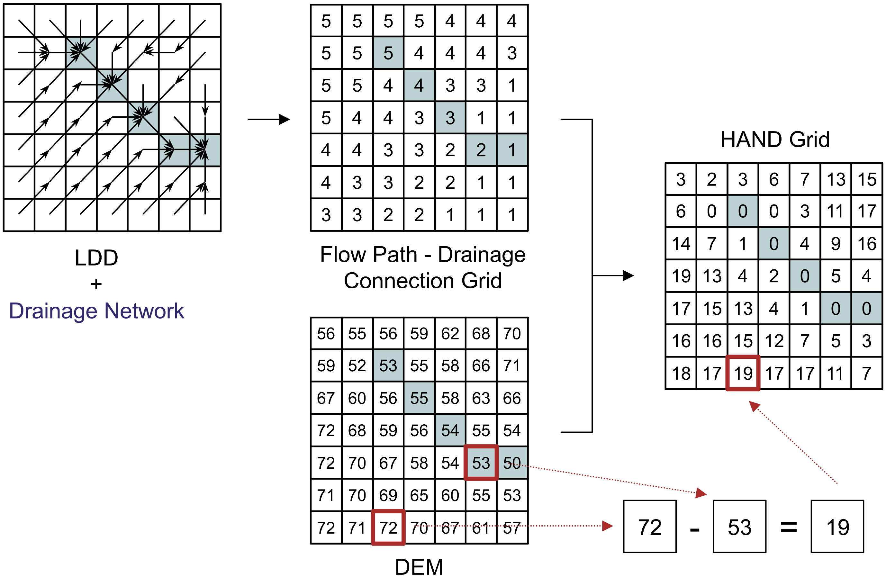
Figure. HAND map: drainage cells at 0 m (valley bottoms) and increasing HAND values upslope. Figure - HAND calculation scheme. Drainage-network cells are shown as blue squares, and flow path considers exclusively the black-arrow directions (Source: Rennó et al, 2008).
Parameters
| Flag | Description |
|---|---|
dem |
Input DEM (GeoTIFF) (e.g., inputDEM.tif). |
d8 |
Input D8 flow directions (GeoTIFF) (e.g., inputD8.tif). |
drainage |
Input drainage network (GeoTIFF; 1 = stream, 0 = non-stream) (e.g., inputDrainage.tif). |
output |
Output HAND raster (GeoTIFF) (e.g., outputHAND.tif). |
Notes.
• HAND is relative to the mapped drainage; choosing an appropriate drainage threshold (from d8drainage) affects HAND smoothness and valley width representation.
• Small negative differences caused by noise are typically clamped to 0. • Derived HAND classes can support terrain zoning (e.g., waterlogged / ecotone / upland) and hydrologic modeling (e.g. classes from highest to lowest susceptibility to flooding).
The following example demonstrates how to use hand tool from the command line:
Reference:
Rennó, C. D., Nobre, A. D., Cuartas, L. A., Soares, J. V., Hodnett, M. G., Tomasella, J., & Waterloo, M. J. (2008). HAND, a new terrain descriptor using SRTM-DEM: Mapping terra-firme rainforest environments in Amazonia. Remote Sensing of Environment, 112(9), 3469-3481. https://doi.org/10.1016/j.rse.2008.03.018
3.5 Applied Hydrology & Risk Management
3.5.1 gfplain
gfplain delineates floodplains and computes water height by linking topography to a hydrogeomorphic scaling of channel stage (Nardi et al., 2006, 2019). For each drainage‐network cell, a potential water level is assigned using the stream power law
\[
h = a \cdot A^{\,b}
\]
where \(A\) is the contributing (upslope) area and \(a, b\) are empirical parameters. The resulting channel water surface \((z + h)\) is then compared against surrounding terrain to flag cells whose elevations are lower than that level as floodplain. This produces (1) a binary floodplain raster and (2) a water-height raster consistent with the selected scaling.
Concept & workflow (summary).
1) Prepare inputs: compute D8 flow directions and contributing area, then derive a drainage mask (e.g., by area threshold).
2) For each stream cell, estimate a water level using the stream power law, and add it to the channel elevation.
3) Map the floodplain as all cells connected to the channel that lie below this water level; also save the resulting water-height grid.
About the power law parameters.
• \(a\) (coefficient) scales the overall magnitude of stage—larger \(a\) yields higher channel levels and broader mapped floodplains for a given \(A\). In practice, \(a\) can reflect the event severity (e.g., return period) and reach characteristics and is typically calibrated against observed/benchmark flood extents or hydrodynamic outputs.
• \(b\) (exponent) controls how stage grows with river size; empirical studies report positive values that capture hydro-climatic and geomorphic controls (e.g., wider/deeper valleys downstream). Tuning \(b\) affects longitudinal consistency of mapped floodplains across orders.
Figure. Hydrogeomorphic delineation: (a) D8 and contributing area; (b) stage from \(h=aA^b\); (c) floodplain cells below channel water level.
Parameters
| Flag | Description |
|---|---|
dem |
Input DEM (GeoTIFF) (e.g., inputDEM.tif). |
d8 |
Input D8 flow directions (GeoTIFF) (e.g., inputD8.tif*). |
accum |
Input contributing area raster (GeoTIFF) (e.g., inputContributingArea.tif). |
drainage |
Input drainage network raster (GeoTIFF; 1 = stream, 0 = non-stream), e.g., inputDrainage.tif. |
a |
Coefficient \(a\) in \(h=aA^b\). Sets overall stage magnitude (event/region scale). |
b |
Exponent \(b\) in \(h=aA^b\). Controls stage growth with \(A\) (network scaling). |
floodplain |
Output floodplain mask (GeoTIFF; 1 = floodplain) (e.g., outputFloodplain.tif). |
waterheight |
Output water height grid (GeoTIFF) computed from \(h=aA^b\) (e.g., outputWaterHeight.tif). |
Notes
• Use a hydrologically conditioned DEM and aligned rasters (same extent/resolution). The drainage mask typically derives from a threshold applied to contributing area. • Calibrate \(a\), \(b\) with local evidence (gauges, reference flood maps, or 2D models) for event-specific applications; defaults may be used for reconnaissance mapping, acknowledging uncertainty. • The method targets rapid, large-area mapping and complements physics-based simulations; it follows the hydrogeomorphic lineage from Nardi et al. (2006) to the global GFPLAIN framework.
The following example demonstrates how to use gfplain tool from the command line:
th gfplain inputDEM.tif inputD8.tif inputContributingArea.tif inputDrainage.tif \
inputA inputB outputFloodplain.tif outputWaterHeight.tifReference:
Nardi, F., Vivoni, E. R. & Grimaldi, S (2006). Investigating a floodplain scaling relation using a hydrogeomorphic delineation method. Water Resources Research, 42, W09409. https://doi.org/10.1029/2005WR004155
Nardi, F., Annis, A., Di Baldassarre, G., Vivoni, E. R., & Grimaldi, S. (2019). GFPLAIN250m, a global high-resolution dataset of Earth’s floodplains. Sci Data, 6, 180309. https://doi.org/10.1038/sdata.2018.309